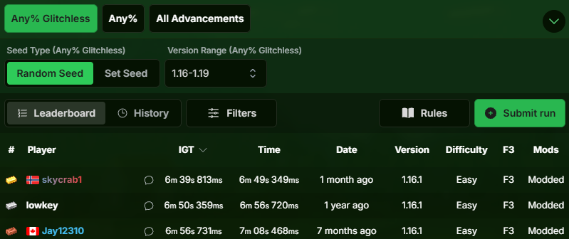

In the world of competitive gaming, few things are as consistently brutal, or as exciting, as speedrunning. And very few games in speedrunning showcase that pressure quite like Minecraft, one of the five must-try games we recommended, because a Minecraft speedrun world record does not only come down to perfect execution, but also a pure stroke of luck.
What is Speedrunning?
Speedrunning is simply trying to complete a video game as fast as humanly possible. Players use precise movement, game knowledge, and strict planning to shave off every single second. Games like Minecraft feature several speedrunning categories, but the most popular is Random Seed Any% Glitchless. In this run, players drop into a completely random world and must beat the Ender Dragon, forcing them to locate structures and gather resources on their own. Because players don't know where the resources they need are, setting a record in this category is notoriously difficult.
The Event
In June 2025, runner Skycrab was on pace to shatter the world record during an absolutely incredible run. In a category where luck is just as important as skill, the game was practically handing him a golden ticket. Everything had aligned perfectly from the very beginning — reaching the Nether by 1:10 and finding the necessary structures almost instantly. On top of that, he also got a looting sword, speeding up his acquisition of blaze rods. He did have slight misplays that caused him to lose a bit of time, but his pace was so astonishingly fast that it did not even matter. He hit the zero-cycle on the Ender Dragon and pearled to the end portal, celebrating the guaranteed world record just moments before everything went completely wrong.
What Actually Happened

The critical moment happened at the 5:30 timestamp of the run. It can be seen that as Skycrab was pearling and crafting on the fly, his cursor landed directly on top of an Enderman. He didn't intentionally look at it — teleporting simply put him in a very unfortunate placement as he was managing his inventory. The Enderman chased him and ended up making him lose the leaderboard-dominating 6:17 record.
The Redemption
Losing a run like that would cause most players to quit for good, but Skycrab kept pushing the past year. He eventually redeemed himself and officially claimed the 6:39 record. While the current record isn't quite as fast as the legendary failed attempt, his story is a beautiful depiction of human determination and the indomitability of the human spirit. Congratulations, Skycrab!
